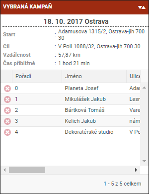
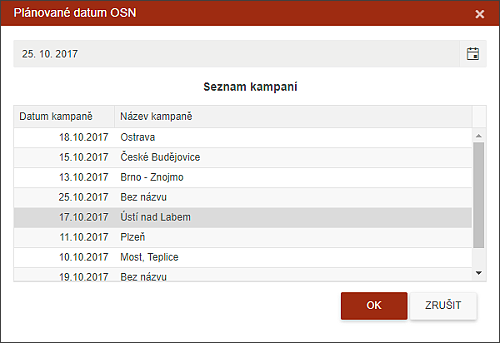

Seznam bodů kampaně
Kliknutím na položku v seznamu kampaní se v seznamu Vybraná kampaň zobrazí detailní přehled adres obsažených v kampani.

Název kampaně - vždy je složen z datumu a názvu. Název může být libovolný.
Start - jedná se adresu o adresu s číslem 0. Přesunutím v seznamu lze startovní adresu změnit.
Cíl - poslední adresa v seznamu. Přesunutím v seznamu lze cílovou adresu změnit.
Vzdálenost - vypočtená vzdálenost trasy.
Čas přibližně - vypočtená doba trasy.
Pořadí - číselné pořadí jednotlivých adres ve vybrané trase. Změnou pořadí (přetažením myší) se adresy přečíslují a klikem na ovládací tlačítko v mapě se změněná trasa překreslí.
Odstranění bodu kampaně
Ikona určená pro odstranění adresy z kampaně. To lze udělat i kdekoliv v programu změnou datumu OSN.
Při změně datumu systém striktně vyžaduje zadat datum jiné a to formou kalendáře nebo výběrem z jiné kampaně.

Pokud uživatel chce nechat spis bez data, pak je potřeba spis přesunout na jinou záložku, např. Ke zpracování pomocí akčního tlačítka.